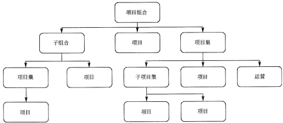
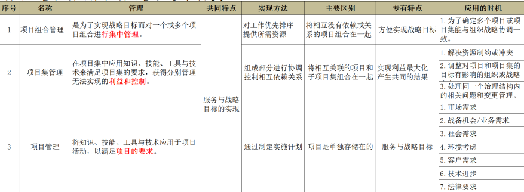
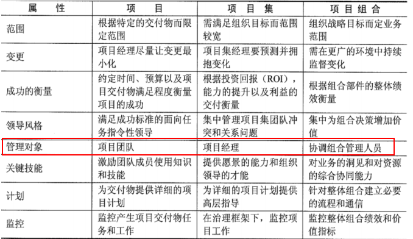
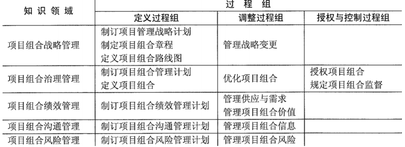
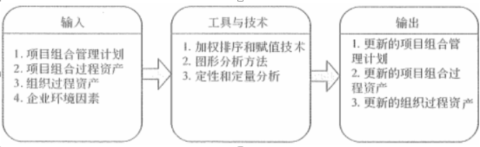

项目集，项目组合的关系

- 项目组合：为实现战略目标而进行的多个项目
- 随战略目标的变化而变化
- 聚焦决策权力
- 项目集：项目之间存在关联关系，需要统一考虑以实现更大利益
- 范围大，提供显著利益聚焦利益，把钱挣到
- 项目：实现组织战略计划的一种手段
- 明确的目标
- 聚焦把活干完

项目集管理
- 大项目不应该用项目集管理方法来进行管理，而是应该用项目管理方法对其进行管理
- 对多个组件进行组合调整，以便于以优化或整合的成本、进度和工作来实现项目集目标（实现1+1>2的效果）
- 项目集经理用到的5个关联关系（项目集绩效管理的主要内容）
- 项目极战略一致性
- 项目集收益管理
- 项目集干系人争取
- 项目集治理
- 项目集生命周期管理
项目集指导委员会主要职责：
- 保证项目集与组织愿景和目标的一致性。
- 项目集批准和启动。
- 项目集筹资
项目集治理功能
创建五种支持能力
- 项目集管理办公室：可是是正式的，或临时抽调的
- 项目集管理信息系统
- 项目集管理中的知识管理
- 项目集管理审计支持
- 项目集管理教育和培训
项目集生命周期
两种划分方法
- 时间顺序：启动、计划、执行、控制、收尾
- 收益的实现情况：
- 项目集定义阶段：关键活动如下
- 建立项目集治理结构
- 组件初始的项目集组织
- 制定项目集管理计划
- 项目集收益支付阶段：组件不断被规划、监控
- 项目集收尾阶段：
- 项目集移交
- 项目集关闭
- 项目集定义阶段：关键活动如下
项目组合管理
- 项目组合中的部件不见得要相互依赖或者直接相关
- 项目组合包含的组件都需要经过识别、评价、选择以及批准等过程
- 项目组合管理需要在项目集和项目对资源需求之间的冲突进行平衡，对资源的分配进行合理安排
与项目管理、项目集管理的异同：

项目组合计划6个方面
- 维护项目组合与战略的一致性。
- 分配财务资源。
- 分配人力资源。
- 分配物料或设备资源
- 度量项目组合中的模块绩效
- 管理风险
项目组合管理实施过程
- 评估项目组合管理过程的当前状态。
- 定义项目组合管理的愿景和计划。
- 实施项目组合管理过程。
- 改进项目组合管理过程。
项目组合管理过程组

项目组合风险管理
三个关键要素
- 风险计划
- 风险评估
- 风险响应
两个子过程
- 制订项目组合风险管理计划：包括识别项目组合的风险、风险责任人、风险承受能力，以及风险管理过程。
- 管理项目组合风险：执行项目组合风险管理计划，包括风险评估、风险响应以及监督风险。

四个阶段
- 风险识别
- 风险分析
- 风险响应
- 风险监控
项目组合报告
- 绩效报告
- 治理决策报告
- 项目组合状态报告
- 项目组合趋势报告
- 组织产能报告
- 组织资源使用报告
- 资金/预算报告
- 战略一致性报告